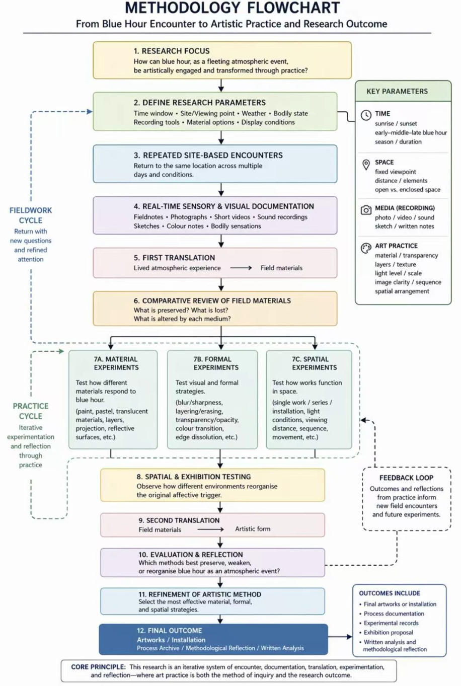
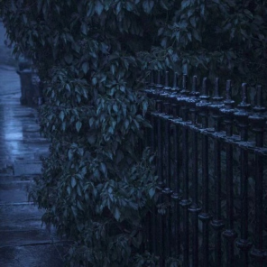
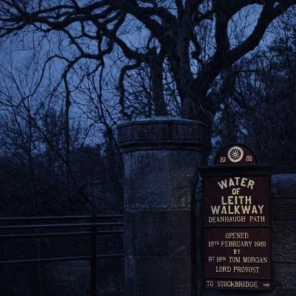
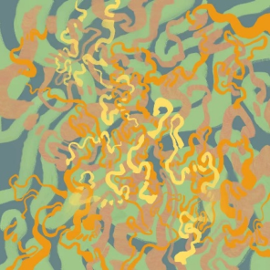
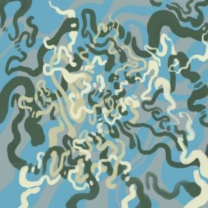
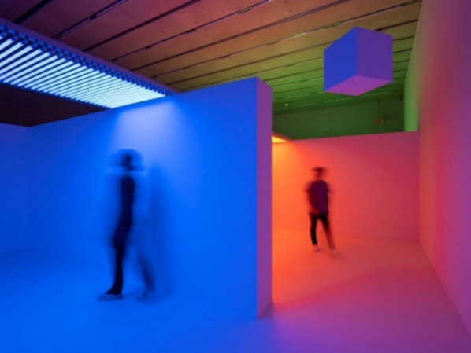
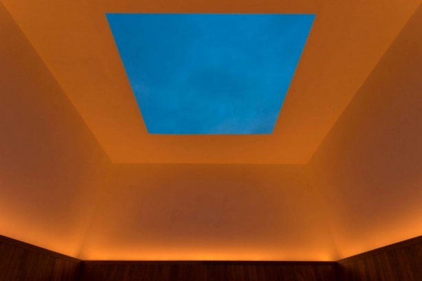
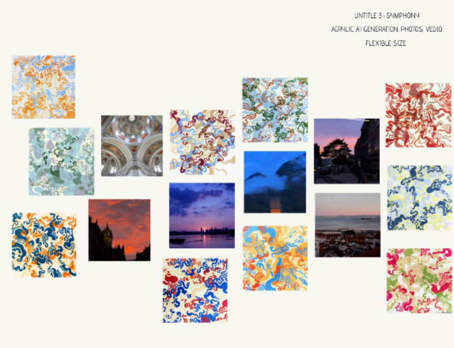
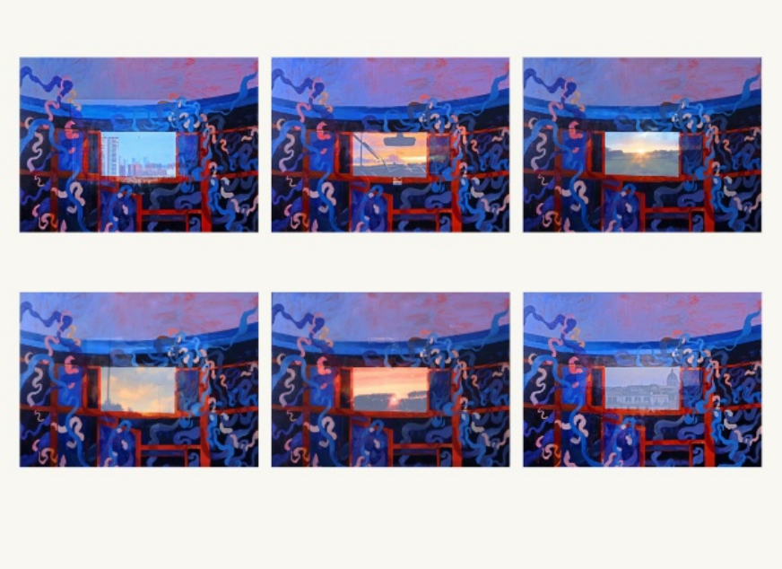
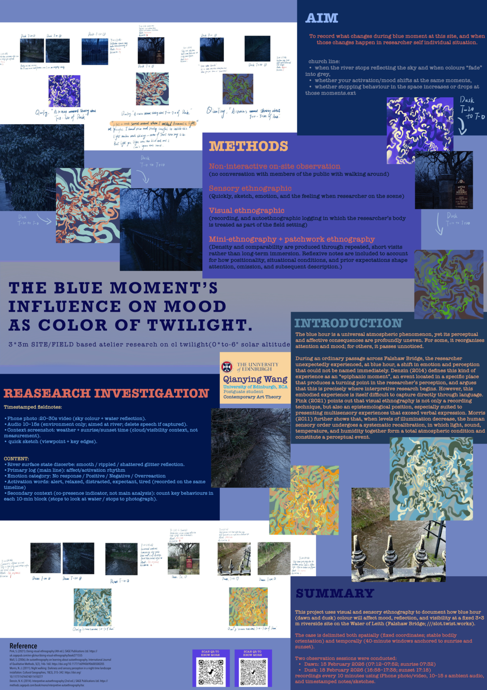

Contemporary Art + Anthropology
(2025-2026) [SEM2]
Research Proposal Exam No. B291370
1. Research Question
Main Question
How does blue hour, as a naturally occurring, brief, and unanticipated chromatic transition, trigger affective and perceptual responses in the artist's body as the primary site of this experience, and how are these responses later transformed into research materials and artistic form in contemporary art?
Sub-questions
(1) How do these environmental changes affect the artistic researcher's perception, attention, bodily orientation, and mood? What specific perceptual changes does blue hour produce in the artist-researcher's body across repeated encounters, and how do these shift as the site and its atmospheric rhythms change?
(2) In what ways does the movement from conscious observation to situated action alter the quality of the encounter with blue hour and the artistic thinking it generates? How can atmosphere be operationalised within a site-based visual and sensory ethnographic method so that the relational character of the encounter remains visible?
(3) After this creation has taken place, how do varied materials and exhibition environments shape the preservation, weakening, reorganisation, and later perception of the original affective trigger?
2. The gap in research
Existing scholars have significantly strengthened the methodological foundations of art and autoethnography, no longer treating it as simple self-narration, but increasingly defining effective autoethnography through reflexivity, procedural clarity,artical creativies, and writing craft. 12345At the same time, the field has expanded beyond conventional prose-based self-
1 Keleş, Ulaş. “Autoethnography as a Recent Methodology in Applied Linguistics: A Methodological Review.” The Qualitative Report 27, no. 2 (2022): 448–474. https://doi.org/10.46743/2160-3715/2022.5131
2 Bochner, Arthur P., and Carolyn Ellis. “Why Autoethnography?” Social Work and Social Sciences Review 23, no. 2 (2022): 8–18. https://doi.org/10.1921/swssr.v23i2.2027
3 Cooper, Robin, and Brian V. Lilyea. “I’m Interested in Autoethnography, but How Do I Do It?” The Qualitative Report 27, no. 1 (2022): 197–208. https://doi.org/10.46743/2160-3715/2022.5288.
reflection toward visual, arts-based, collaborative, and interdisciplinary forms of inquiry, showing that autoethnography can work through practice, image-making, and collective knowledge production rather than through text alone. 6789However, these developments have
been used more often in education, transformative learning, disability studies, and mental health than in repeated, site-specific, arts-led research on artwork exists..101112
What remains comparatively underdeveloped is a framework able to connect bodily perception, atmospheric change, recording media, material experimentation, and exhibition conditions within the same study. Existing work has separately discussed the physical properties of blue hour, the effects of light on the body and emotion, theories of
atmosphere, sensory ethnography, and embodied experience in light-based art. 131415Yet
-
4 Adams, Tony E., and Andrew F. Herrmann. “Good Autoethnography.” Journal of Autoethnography 4, no. 1 (2023): 1–9. https://doi.org/10.1525/joae.2023.4.1.1
-
5 Dahal, Nirajan. “Writing Philosophical Autoethnography: A Review.” The Qualitative Report 28, no. 11 (2023): 3185–3191. https://doi.org/10.46743/2160-3715/2023.6757.
6 Li, Bin, and Anjani Bhattarai. “Reimagining Scholarly Impact through Transformative Learning: An ArtsBased Collaborative Autoethnography.” Journal of Transformative Education 23, no. 1 (2025): 79–97. https://doi.org/10.1177/15413446241263762.
7 Crowley, Sarah. “Making Visible the Invisible: How Combining Autoethnography with Visual Arts Practice Unearthed More than I Imagined.” Art/Research International: A Transdisciplinary Journal 7, no. 1 (2022): 156–185. https://doi.org/10.18432/ari29618.
8 Crowley, Sarah, Alison MacDonald, and Sarah Fraser. “The Art and Design of Collaborative
Autoethnography: Exploring Disciplinary, Methodological and Collaborative Complexity in Education
Research.” International Journal of Art & Design Education published online 2025.
https://doi.org/10.1111/jade.12581
9 Haeffner, Marta, Fiona Hames, Michael M. Barbour, Jessica M. Reeves, Gabrielle Platell, and Scott Grover.
-
“Expanding Collaborative Autoethnography into the World of Natural Science for Transdisciplinary Teams.” One Earth 5, no. 2 (2022): 157–167. https://doi.org/10.1016/j.oneear.2022.01.002.
-
10 Tian, Xiaoming, Zeyu Zhang, and Lihua Xu. “Autoethnography as a Research Method in Cross-Cultural Education Studies.” Cross-Cultural Education Studies 1, no. 2 (2025): 76–90.
https://doi.org/10.63385/cces.v1i2.380
- 11 Wechuli, Yvonne W. “Cripping Auto-/Ethnography?” Frontiers in Sociology 10 (2025).
https://doi.org/10.3389/fsoc.2025.1577749
- 12 Burrows, Kathryn. “Psych Unit Gangs: An Autoethnography.” Culture, Medicine, and Psychiatry 48, no. 3 (2024): 663–675. https://doi.org/10.1007/s11013-024-09866-4
13 Edensor, Tim. From Light to Dark: Daylight, Illumination, and Gloom. Minneapolis: University of Minnesota Press, 2017. https://www.upress.umn.edu/9780816694433/from-light-to-dark/.
there is still little systematic research on how natrual atmosphere functions as a pre-artistic trigger, how this trigger changes through repeated return to the same site, and how it is gradually transformed into field materials and then into artistic form. Therefore, this is also why autoethnography alone is not enough here, is needed that can begin from embodied experience but also account for how that experience is co-produced and mediated.
3. Literature Review
The “blue hour”, derived from the French l'heure bleue, refers to the period that appears before sunrise and after sunset, when the sun is positioned at a certain angle below the horizon. During this period, the short-wavelength blue part is enriched in ambient light, and the air takes on a poetic atmosphere.16 At the same time, light itself also significantly modulates cognitive brain responses, and the intensity of this effect depends in turn on light intensity and wavelength.17 Therefore, the emotional effect of this experience is difficult to translate fully through any single medium of representation. Neither perceptual handdrawing under changing light conditions, nor the camera sensor's colour rendering, can accurately reproduce the characteristics of the environmental spectrum. As Cadava writes when discussing Benjamin’s understanding of early photography and the photographic event itself, it is an image “uncaptured in the twilight zone between the visual and the nonvisual”.3
However, this moment of “affect”, which is difficult to “translate” precisely, is precisely what constitutes the meaning of the blue hour. Photographer Paulina Ávila understands the blue
14 Cheetham, Fiona, Morven G. McEachern, Sheila Malone, and Brendan J. Keegan. “Exploring the Role of Embodiment in the Production and Experience of Wild Atmospheres in Nature.” Consumption Markets & Culture, 2025. https://doi.org/10.1177/14705931251335856.
15 Steadman, Chloe, and Steven Millington. “(Dis)ordering Atmospheres: A Sensory Ethnography of a Seaside Pier.” Consumption Markets & Culture, 2025. https://doi.org/10.1177/14705931251364055.
16 Giovanna L. Costantini, review of The Blue Hour of Peder Severin Krøyer, Leonardo 55, no. 1 (2022): 100– 101, https://muse.jhu.edu/article/848992.
17 Gilles Vandewalle, Pierre Maquet, and Derk-Jan Dijk, “Light as a Modulator of Cognitive Brain Function,” Trends in Cognitive Sciences 13, no. 10 (2009): 429–438, https://doi.org/10.1016/j.tics.2009.07.004. 3 Eduardo Cadava, Words of Light: Theses on the Photography of History (Princeton, NJ: Princeton University Press, 1997), 7, https://www.jstor.org/stable/j.ctv39x7bt.
hour as a brief and often overlooked transitional period, whose importance lies not in whether it can be fully recorded, but in how it can be re-experienced, as a fleeting perceptual experience that can continue to alter an individual’s way of perceiving time, life, and the world after it has been seen.18 Similarly, the Caledon artist Patty Maher also understands this moment as an experience of waiting, existence, and the beauty of transience, and believes that every image is a meditation on those fleeting moments.19 In this sense, frames and backdrops, blue screens and photographic technology, are not simply neutral media, but create a particular atmosphere by interweaving different temporalities, spatialities, and the sense of distance between bringing nearer and pulling farther away.20 As Costantini points out, every artist meets a certain distinctive texture of life in the environment around them, and their aesthetic choices often reflect an aesthetic way of looking at the real world. This also suggests that, although the blue hour may evoke a shared sensitivity to transience, its affective form remains deeply individual.
For anthropologists, the blue hour is not simply a visual object to see, but a transient and relational event that takes shape through changing encounters between body and environment. Böhme’s account of atmosphere as something generated between subject and object, 21 and Ingold’s notion of the weather-world, both shift attention away from detached observation and towards immersion in light, air, movement, humidity, temperature, and sound as qualities of a lived environment. Seen in this way, the blue hour is not merely watched,22 but an atmospheric process to be entered, experienced, and bodily borne. The concern is with “evoked” notions of agency extracted from everyday practices and forms of
18 "Paulina Ávila Presents "La Hora Azul" (the Blue Hour), a Photographic Exploration of the Ephemeral, Memory, and Coexistence." 2026., Jan 08CE Noticias Financieras English ed.
19 Zachary Roman, “‘The Blue Hour’: Caledon Artist Patty Maher Debuts New Solo Exhibition,” Caledon Citizen, February 13, 2025, https://www.proquest.com/wire-feeds/blue-hour-caledon-artist-patty- maherdebuts-new/docview/3167094892/se-2.
20 Costantini, review of The Blue Hour of Peder Severin Krøyer, 100–101.
21 Gernot Böhme, “Atmosphere as the Fundamental Concept of a New Aesthetics,” Thesis Eleven 36, no. 1 (1993): 113–126, https://journals.sagepub.com/doi/10.1177/072551369303600107;
——The Aesthetics of Atmospheres, ed. Jean-Paul Thibaud (Abingdon: Routledge, 2017), https://www.routledge.com/The-Aesthetics-of-Atmospheres/Bohme-Thibaud/p/book/9781138324558.
22 Tim Ingold, “Earth, Sky, Wind, and Weather,” Journal of the Royal Anthropological Institute 13, suppl. 1 (2007): S19–S38, https://rai.onlinelibrary.wiley.com/doi/abs/10.1111/j.1467-9655.2007.00401.x;
——The Life of Lines (London: Routledge, 2015), https://www.routledge.com/The-Life- ofLines/Ingold/p/book/9780415576864
discourse.23 Artistic response is not a subjective expression that occurs independently of context but is gradually formed in the continuing encounters between body and environment. Norman Denzin argues that research grounded in autoethnographic practice often originates from a unique encounter or event, that is, an “epiphanic moment,”24 which condenses a set of questions or perceptual orientations and prompts the researcher to undertake systematic inquiry thereafter.
In such moments, atmosphere acquires a condensational force, intensifying the body’s sensory relation to the environment. Autoethnographic attention registers how this is lived from within — but autoethnography alone risks leaving the subject too central. Actornetwork theory repositions blue hour as a relational process, co-produced through body, site, weather, light, reflective surfaces, and recording devices: what appears as epiphanic feeling is not internal emotion but the temporary outcome of a network in which human and nonhuman actors both participate. ANT and non-representational theory together then provide the reflexive framework, not tracing how these relations are assembled, but attending to the affective and pre-reflective registers that exceed what retrospective writing can fully recover.
Tracing how a brief atmospheric moment becomes artistic form allows this study to ask where creativity comes from and how it takes shape in practice. In a natural environment without fixed social script or stable context, artistic response emerges not from prior intention but from situated engagement with changing light, weather, and bodily feeling — a mode of making develops through response, adjustment, and choice within the encounter itself. Blue hour thus becomes a case through which to demonstrate that artistic form is produced not outside circumstances, but through acting, perceiving, and deciding within them.
23 Alfred Gell, Art and Agency: An Anthropological Theory (Oxford: Oxford University Press, 1998), 47–50, https://global.oup.com/academic/product/art-and-agency-9780198280149
24 An epiphanic moment refers to a significant and transformative experience that reveals new meanings or questions for the researcher. In autoethnography, it marks a point where personal experience becomes analytically productive, prompting sustained reflection and systematic inquiry rather than remaining a fleeting impression. See also: Norman K. Denzin, Interpretive Autoethnography, 2nd ed. (Los Angeles: SAGE, 2014), https://methods.sagepub.com/book/mono/interpretive-autoethnography
4. Methodology
This project adopts practice-based research methodology, informed by sensory ethnography, visual ethnography, autoethnographic reflection, actor-network theory, and non-representational theory. Its methods include repeated site visits, fieldnotes, photography, short video and sound recording, sketching, material experimentation, spatial testing, and reflective analysis. 25 Sensory ethnography, visual ethnography, and autoethnography together structure the field encounter and its written record. Actornetwork theory and non-representational theory then recentre the analysis: ANT traces relations among body, site, weather, light, and devices as co-produced events; NRT attends to affect and pre-reflective registers that exceed retrospective writing.
The research period will run from 1 May 2026 to 31 October 2026, the researcher will return once per week to the Water of Leith (Falshaw Bridge; ///slot.twist.works), in Edinburgh. Which is not only is the place strongly influenced by me, but as a famous tourism town of blue moment also. using a fixed observation point and a consistent recording protocol. The research operates through three interlocking cycles: Fieldwork cycle, Practice cycle, and a Feedback loop in which each continuously reshapes the others, and connected by the concept of two translations: from lived atmospheric experience to field materials, and from field materials to artistic form, tracking what each stage preserves, weakens, reorganises, and creates.

Fieldwork cycle:
This process will be carried out once a week for six months at the same site. Each session will be recorded either to sunrise or sunset and will last forty minutes in total, twenty minutes before the anchor point and twenty minutes after it. (T-20, T-0, T+20) Attention will be given to light intensity, colour shift, weather, cloud cover, reflective surfaces, sound and background, water surface, and atmospheric conditions.
Field materials will include photography (manual exposure, colour temperature uncorrected; images taken at defined intervals and opportunistically), video (30 seconds to 3 minutes capturing light change, water movement, and ambient sound), sound recording (directional and omnidirectional microphones recording ambient atmosphere), rapid sketching (electronic handcraft) and notes (using a reference swatch system alongside free notation). At the end of the session, a short closing note will record the mood affecting the body over the course of the encounter. Taken together, these materials form the first translation.
Translation 1: Atmospheric Experience →Field Materials
The first translation converts this lived encounter into field materials. Each visit will generate a set of records through fixed-point photography, short video clips, environmental sound recordings, handwritten fieldnotes, colour notes, and quick sketches or rapidly painted responses. El Guindi emphasises the “ ethnographic adequacy ” of visual media, that is, whether and how visual materials can bear the weight of ethnographic argument.26
These media are used together because each one preserves various aspects of the event. In this stage, I will focus on discussing what each medium preserves that others cannot, what each medium loses, distorts, or domesticates, what each medium generates that was not consciously intended, and what questions the material raises for subsequent field encounters and studio experiments.
26 Fadwa El Guindi, Visual Anthropology: Essential Method and Theory (Walnut Creek, CA: AltaMira Press,
2004), https://www.bloomsbury.com/uk/visual-anthropology-9780759115163/

author



Practice cycle:
This process will run in parallel throughout the studio after weekly fieldwork. After each site visit, the field materials, including photography, video, sound recordings, rapid electronic sketches, color and written notes, and the closing note on bodily response, will be reviewed in the studio and compared to identify what each form of recording preserves, weakens, or changes.
Translation 2: Field Materials →Artistic Form
The second translation takes place in the studio and begins with the systematic creation of field materials. Material experiments will test how different substances and surfaces receive or resist the qualities identified in the field archive.
In this stage, I will focus on what kind of relation each material establishes with the original affective trigger. For example, traditional painting may better retain slowness, accumulation, and bodily pressure; digital painting may emphasise layering, removal, luminosity, and instability; video may preserve temporal drift and environmental transition more directly.
The point is not to decide in advance which medium is superior, but to analyse why an integrated form of practice becomes necessary for the outcome.
Feedback Loop：
At this stage, reflection cannot rely only on actor-network theory and non-representational theory, which needs concrete artistic cases through materially and spatially reorganised. Cruz-Diez's Chromosaturation (shown at the Sharjah Art Foundation in 2015) consists of three spaces flooded with saturated monochromatic light, disturbing the retina and turning colour into a material phenomenon that continues to occur across space and time; ¹27 Turrell's Meeting (1980–86/2016, MoMA PS1), through its opening in the ceiling and an LED programme synchronised with sunrise and sunset, structures the chromatic transition of the sky indoors as a duration in which one can remain, making the perceptual threshold itself part of the work's content;2829Eliasson's The weather project (2003, Tate Modern) assembles an enterable simulated sunset environment through monofrequency lamps, a mirrored ceiling, and mist-filled air,3031while Din blinde passager (2010, restaged at Tate in 2019) pushes viewers into a fog-filled corridor, suspending the dominance of vision and forcing the body to move through gradated coloured light by relying on other senses;32 GonzálezFoerster's TH.2058 (2008–09, Tate Modern) enlarged replicas of sculptures to construct a disorienting sense of
27 Pérez Art Museum Miami, “Carlos Cruz-Diez: Chromosaturation,” 2022, https://www.pamm.org/en/essay/c arlos-cruz-diez-chromosaturation/; Cruz-Diez official site, https://cruz-diez.com/works/chromosaturation
28 James Turrell, in “James Turrell on Meeting,” MoMA PS1, 2016, https://www.momaps1.org/en/post/237- james-turrell-on-meeting.
29 Oliver Shultz, “Inhabiting the Sky,” MoMA (Medium), November 14, 2016,
https://medium.com/moma/inhabiting-the-sky-james-turrells-meeting-reopens-at-moma-ps12337883b542e
30 Oliver Shultz, “Inhabiting the Sky,” MoMA (Medium), November 14, 2016,
https://medium.com/moma/inhabiting-the-sky-james-turrells-meeting-reopens-at-moma-ps12337883b542e
31 Studio Olafur Eliasson, “The weather project,” 2003, https://olafureliasson.net/artwork/the-weather- project-2003/
32 Tanya Bonakdar Gallery, “Olafur Eliasson: The Weather Project,” 2003–04,
place, 33 suggesting that a small number of situational cues are already enough to activate the viewer's perception of atmospheric moments, that atmosphere comes before image, and situation before.


33 Tate Modern, “TH.2058,” https://www.tate.org.uk/whats-on/tate-modern/unilever-series/unilever-series- dominique-gonzalez-foerster-th2058
It is precisely this process of learning from artists that makes the final movement of my wor k towards integrated making necessary, not because mixed media is somehow more advanc ed, but because blue hour itself contains colour, duration, environment, memory, and distan ce, and no single medium can carry all of these with equal force. For this reason, the final w ork brings field materials together through a deliberately composed image-based arrangem ent on a flat pictorial ground. Following the semiotic relation of Object and Interpretant, the work constructs abstract and figurative elements that explain one another and generate me aning together. As shown in Figures 1 and 2, the image is made from two kinds of material: abstract acrylic lines further developed through AIGC and later reworked, and figurative pho tographs and video stills. The viewer's gaze moves repeatedly between abstraction and figur ation, forming a progression from recognition to felt experience, and producing an associat e path of similar to Aby Warburg's Mnemosyne Atlas.


The research outputs:
A finished artworks or installation components.
A process archive comprising field documentation, experimental records, and reflective documentation from all stages.
An exhibition or exhibition proposal presenting works in a spatially considered environment. A written analysis (approximately 5,000–8,000 words) addressing the research questions, the double translation process, and the methodological contribution of the study.
5. Implication
Practically, the double translation framework offers an operable model from lived experience to field materials, and from field materials to artistic form applicable beyond blue hour to any research concerned with natural or environmental experience and artistic practice.
Theoretically, the research extends key concepts of translation and epiphany while contributing to the application of actor-network theory and non-representational theory
within art anthropology. Together, they strengthen the theoretical connection between visual anthropology, contemporary art, and sensory studies and provide a conceptual basis for other practices seeking to work from fleeting environmental experience, embodied perception, and process-based translation.
This is also where situated action becomes methodologically visible. The project does not continue through a fixed plan in which the form of the final work is decided in advance. Instead, decisions appear responsively from the encounter itself, from the behaviour of devices, from the resistance of materials, and from the partial failures of each translation. Failed sketches, unusable recordings, unexpected material reactions, and revised display tests are therefore not treated as deviations from the research. They are evidence of how the work is done in situation. For this reason, the project will maintain a process archive containing drafts, rejected attempts, reversals, failed tests, installation notes, and methodological reflections. This archive is essential because it preserves the iterative and responsive logic of the research. It shows that the final artworks are not spontaneous expressions of mood, but the outcome of repeated encounters, mediated transformations, and materially grounded decisions.
Word count：2625
6. Bibliography
Böhme, Gernot. “Atmosphere as the Fundamental Concept of a New Aesthetics.” Thesi s Eleven 36, no. 1 (1993): 113–126. https://journals.sagepub.com/doi/10.1177/07255136 9303600107
Böhme, Gernot. The Aesthetics of Atmospheres. Edited by Jean-Paul Thibaud. Abingdo n: Routledge, 2017. https://www.routledge.com/The-Aesthetics-of- Atmospheres/BohmeThibaud/p/book/9781138324558
Cadava, Eduardo. Words of Light: Theses on the Photography of History. Princeton, N J: Princeton University Press, 1997. https://www.jstor.org/stable/j.ctv39x7bt
Cheetham, Fiona, Morven G. McEachern, Sheila Malone, and Brendan J. Keegan. “Exploring the Role of Embodiment in the Production and Experience of Wild Atmospheres in Nature.” Consumption Markets & Culture, 2025. https://doi.org/10.1177/14705931251335856.
Costantini, Giovanna L. Review of The Blue Hour of Peder Severin Krøyer. Leonardo 5 5, no. 1 (2022): 100–101. https://direct.mit.edu/leon/article/55/1/100/108569/The-Blue-H our- of-Peder-Severin-Kroyer
Denzin, Norman K. Interpretive Autoethnography. 2nd ed. London: SAGE, 2014. https:/ /uk.sagepub.com/en-gb/eur/interpretive-autoethnography/book241158
Edensor, Tim. From Light to Dark: Daylight, Illumination, and Gloom. Minneapolis: University of Minnesota Press, 2017. https://www.upress.umn.edu/9780816694433/from-light-todark/.
El Guindi, Fadwa. Visual Anthropology: Essential Method and Theory. Walnut Creek, C A: AltaMira Press, 2004. https://archive.org/details/visualanthropolo0000elgu
Gell, Alfred. Art and Agency: An Anthropological Theory. Oxford: Oxford University Pre ss, 1998. https://global.oup.com/academic/product/art-and-agency-9780198280149 Günel, Gökçe, Saiba Varma, and Chika Watanabe. “A Manifesto for Patchwork Ethnogr aphy.” Fieldsights, June 9, 2020. https://www.culanth.org/fieldsights/a-manifesto-for-pat chworkethnography
Ingold, Tim. “Earth, Sky, Wind, and Weather.” Journal of the Royal Anthropological Ins titute 13, suppl. 1 (2007): S19–S38. https://abdn.elsevierpure.com/en/publications/earthsky- wind-and-weather/
Ingold, Tim. The Life of Lines. London: Routledge, 2015. https://www.taylorfrancis.com/ books/mono/10.4324/9781315727240/life-lines-tim-ingold
Morphy, Howard. “Art as Action, Art as Evidence.” In The Oxford Handbook of Materi al Culture Studies, edited by Dan Hicks and Mary C. Beaudry, 265–290. Oxford: Oxfor d University Press, 2010. https://openresearch-repository.anu.edu.au/items/d2dca959-7c d9- 4701-882d-953d705d3721
Pink, Sarah. Doing Visual Ethnography. 4th ed. London: SAGE, 2021. https://uk.sagepu b.com/en-gb/eur/doing-visual-ethnography/book271555
Roman, Zachary. “‘The Blue Hour’: Caledon Artist Patty Maher Debuts New Solo Exhib ition.” Caledon Citizen, February 13, 2025. https://caledoncitizen.com/the-blue-hour-cal edon- artist-patty-maher-debuts-new-solo-exhibition/
Rutten, Kris, An van Dienderen, and Ronald Soetaert. “Revisiting the Ethnographic Tur n in Contemporary Art.” Critical Arts 27, no. 5 (2013): 459–473. https://www.tandfonlin e.com/doi/abs/10.1080/02560046.2013.855513
Schneider, Arnd, and Christopher Wright, eds. Contemporary Art and Anthropology. O xford: Berg, 2006. https://www.routledge.com/Contemporary-Art-and-Anthropology/Sch
neider-Wright/p/book/9781845201036
Steadman, Chloe, and Steven Millington. “(Dis)ordering Atmospheres: A Sensory Ethnography of a Seaside Pier.” Consumption Markets & Culture, 2025. https://doi.org/10.1177/14705931251364055. Suchman, Lucy A. Human-Machine Reconfigurations: Plans and Situated Actions. 2nd ed. Cambridge: Cambridge University Press, 2007. https://www.cambridge.org/core/boo ks/humanmachine-reconfigurations/9D53E602BA9BB5209271460F92D00EFE Toufic, Jalal. (Vampires): An Uneasy Essay on the Undead in Film. Barrytown, NY: Stati on Hill, 1993. https://jalaltoufic.com/downloads/Jalal_Toufic%2C_%28Vampires%29%2C_An_ Uneasy_Essay_on_the_Undead_in_Film_%28mid_res%29.pdf Vandewalle, Gilles, Pierre Maquet, and Derk-Jan Dijk. “Light as a Modulator of Cogniti ve Brain Function.” Trends in Cognitive Sciences 13, no. 10 (2009): 429–438. https://do i.org/10.1016/j.tics.2009.07.004 Vannini, Phillip, ed. Non-Representational Methodologies: Re-Envisioning Research. Lon don: Routledge, 2015. https://www.routledge.com/Non-RepresentationalMethodologiesRe-Envisioning-Research/Vannini/p/book/9780367599638
